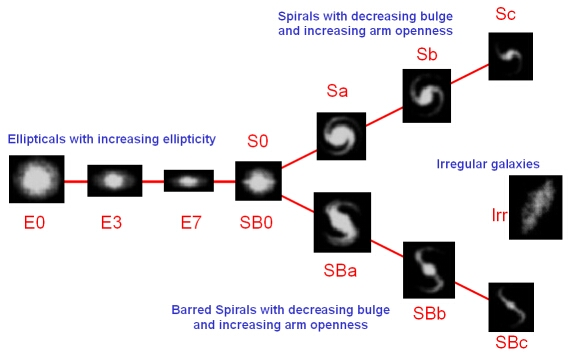

The Hubble classification of galaxies, also referred to as the ‘tuning fork’ diagram because of its shape, classes galaxies along three main lines into:
- Elliptical galaxies
- Spiral galaxies
- Barred Spiral Galaxies

Edwin Hubble originally identified an evolutionary sequence for the galaxies (from early-type to late-type) as one moved from left to right across the diagram. Although this is now known to be a false interpretation, the terms ‘early-type’ and ‘late-type’ are still used regularly by astronomers in the manner described below, and when discussing broad galaxy types.
Elliptical Galaxies
Hubble’s elliptical galaxies were classed according to the ellipticity of the galaxy, and given a Hubble type:
E = 10 x (1 – b/a)
where a = semi-major axis and b = semi-minor axis of the ellipse. Observed values range from E0 (circular cross section – a spherical galaxy) to E7 (the most flattened). E0 are considered ‘early-type’ ellipticals and E7 are ‘late-type’ ellipticals.
S0/SB0 Galaxies
Located in the fork of the Hubble classification diagram and intermediate between the elliptical and spiral galaxies are the S0/SB0 galaxies. These galaxies show prominent bulges, but no spiral arms.
Spiral Galaxies
Spiral galaxies are classed from ‘early-type’ to ‘late-type’ according to the ratio of the luminosity of the bulge compared with the disk, and the amount of winding of the spiral arms. Type Sa (early) spiral galaxies have prominent bulges (bulge to disk luminosity ~0.3), tightly wound arms (pitch angle ~ 0.6), and the stars in the spiral arms are distributed very smoothly. Type Sc (late) spirals have the least prominent bulges (bulge-to-disk luminosity ~ 0.05), and loosely wound arms (pitch angle ~ 0.18) that are resolved into clumps of stars and HII regions.
Barred Spiral Galaxies
In bars, the spiral arms do not start directly from the bulge, but from an extended bar of stars that passes through the bulge. They share the same range of classifications as non-barred spirals – from Type SBa (early) to SBc (late) – according to the prominence of the bulge and the winding of the spiral arms.
Irregular Galaxies
A later extension to the Hubble classification was the inclusion of irregular galaxies in two classes:
Irr I included irregular galaxies that showed some hint of organised structure (such as the Large and Small Magellanic Clouds), while Irr II were those irregulars that were completely disorganised.
Comparison of Hubble Types
| Class | Absolute magnitude (B-band) | Mass (solar masses) | Diameter (kiloparsec) |
|---|---|---|---|
| Ellipticals | -8 to -23 | 107 to 1012 | ~0.3 to 100s |
| Spirals | -16 to -23 | 109 to 1012 | 5 to 100 |
| Irregulars | -13 to -20 | 108 to 1010 | 1 to 10 |